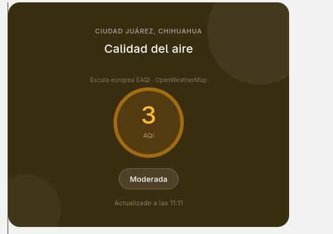
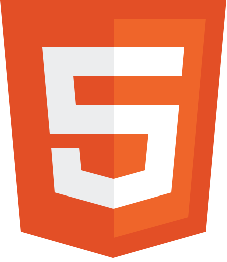
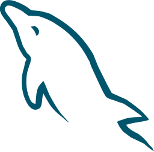
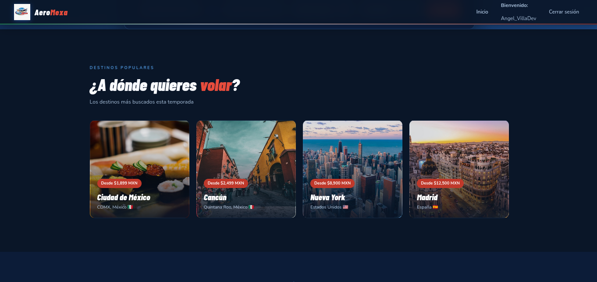
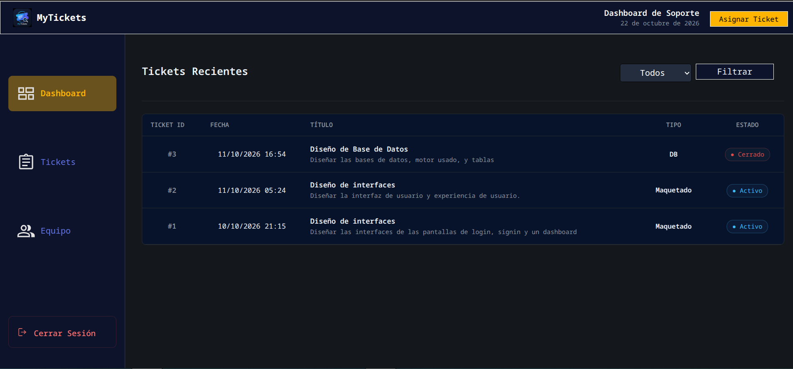

Aire Libre
Plataforma web diseñada para el monitoreo en tiempo real de la calidad del aire en Ciudad Juárez, brindando acceso público a los niveles de AQI.
Ver sitio en vivoHola, soy
Especializado en crear experiencias de usuario adaptadas a diferentes necesidades y negocios. Apasionado por el desarrollo y la tecnología.
Estudiante de ingeniería de Software en la Universidad Tecnológica de Ciudad Juárez (UTCJ). Apasionado por la tecnología, la programación, y el desarrollo de software. Actualmente practicante de desarrollo web en una empresa.
Experiencia en la dirección de proyecto y manejo de recursos, aplicando metodologías ágiles para entregar resultados de calidad.
Aplicado en la investigación, aprendizaje y estudio de las diferentes tecnologías requeridas para cada proyecto.
Especializado en la creación de aplicaciones completas y funcionales, desde la lógica de negocio hasta la interfaz de usuario y la persistencia de datos.
Optimización constante para garantizar la mejor experiencia de usuario, con énfasis en velocidad y eficiencia.
Tecnologías y herramientas con las que trabajo regularmente
 React
React
HTML/CSS JavaScript
JavaScript
MySQL Node.js
Node.js C#
C# Windows FormsReact Native
Windows FormsReact NativeAlgunos de los proyectos en los que he trabajado recientemente

Plataforma web diseñada para el monitoreo en tiempo real de la calidad del aire en Ciudad Juárez, brindando acceso público a los niveles de AQI.
Ver sitio en vivoAplicación de escritorio enfocada en digitalizar y optimizar el control de pacientes y agendas médicas. Cuenta con persistencia de datos local y una interfaz intuitiva para el sector salud.
Descargar para Windows
Plataforma de comercio electrónico para la reserva y compra de boletos de avión. Diseñada bajo una arquitectura orientada a servicios, donde me encargué de la lógica del servidor y la integración de la pasarela de pagos.
Ver plataformaAplicación móvil multiplataforma centrada en las finanzas personales. Permite la administración transparente de flujos de efectivo mediante categorización inteligente y sincronización en la nube.
Conocer más y descargar
Plataforma web de gestión de tickets de trabajo desarrollada en NextJS con JWT y control basado en roles. Permite visualizar y asignar tickets acorde al tipo de trabajo y el rol de cada miembro del equipo.
Ver repositorio¿Tienes un proyecto en mente o quieres trabajar juntos? ¡Escríbeme!